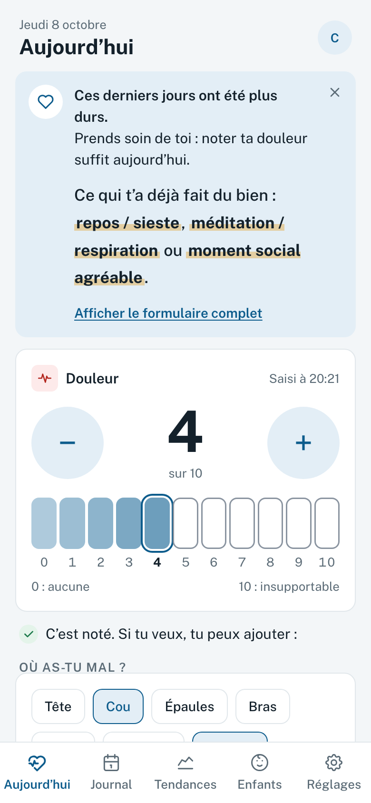
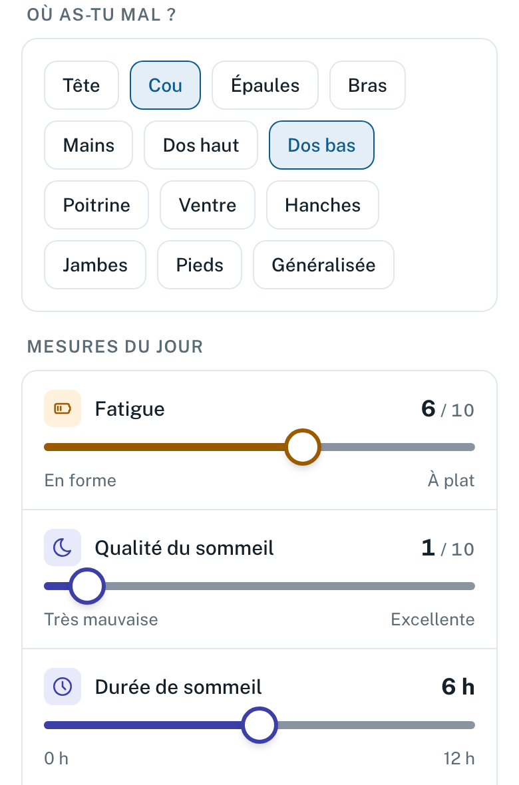
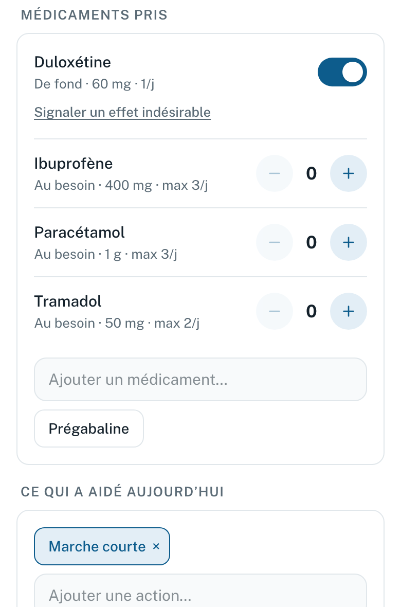
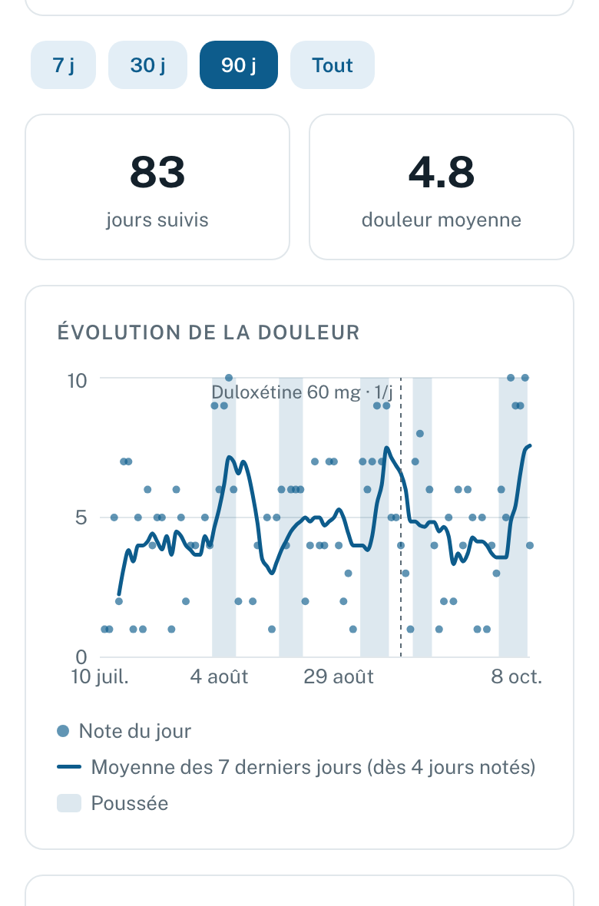
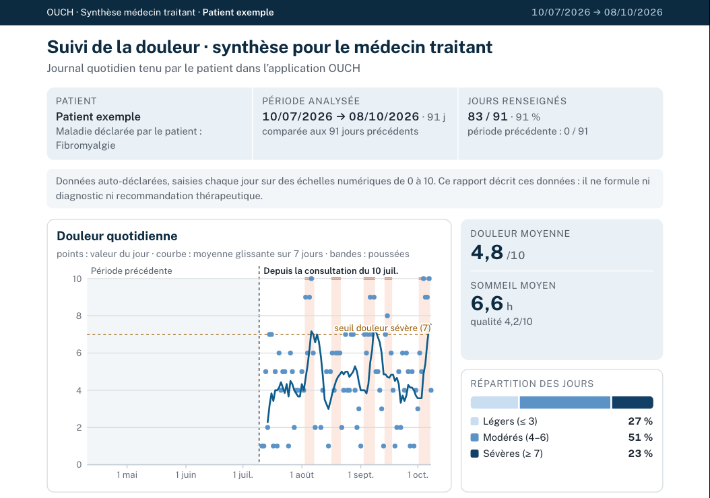
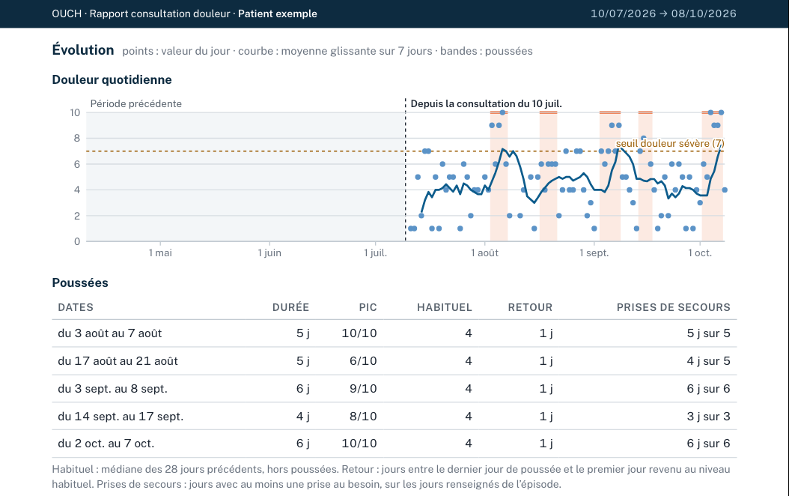

Pour les professionnels de santé
Une minute par jour pour le patient, deux minutes de lecture pour vous.
Carnet de douleur libre et gratuit, pour la fibromyalgie et les autres douleurs chroniques. Le patient note sa journée en moins d’une minute sur son téléphone, sans compte ; ses données restent sur l’appareil. Il en tire un rapport pour la consultation, qui décrit les données sans les interpréter.
Des chiffres pris au jour le jour, plutôt qu’un récit de mémoire. Une comparaison à la période précédente, les jours nettement plus douloureux que d’habitude, les traitements pris avec le soulagement et les effets indésirables déclarés, et la question que le patient veut poser. Un appui pour l’anamnèse, pas une aide à la décision.




| Le patient note |
|---|
| Douleur du jour, de 0 à 10 : la seule saisie dont une journée a besoin pour compter.Échelle numérique recommandée pour l’intensité[1][3]. Notée au jour le jour : le rappel d’une seule journée est plus fidèle que celui de la semaine[6]. |
| Où ça fait mal, sur 13 zones.Localisation et extension, jour par jour. Déclaratif, pas un critère de classification. |
| Fatigue, sommeil, brouillard mental, humeur, stress, activité, de 0 à 10.Suivis à côté de la douleur. Échelles simples, non validées. Sommeil et douleur sont liés dans les deux sens[14]. |
| Traitements, de fond ou au besoin.Posologie réellement prise, jours oubliés, prises au besoin, soulagement, effets indésirables datés, changements de dose. |
| Ce qui a aidé, en un geste.Les approches non médicamenteuses que le patient repère lui-même. |
| Météo, cycle, note, facultatifs.Des pistes que le patient veut tester ; le lien météo et douleur reste discordant[7][11–13]. |
Seule la douleur suffit pour qu’une journée compte. Pendant une poussée, l’écran se réduit à la douleur ; le reste est proposé ensuite, sans insister.
Références numérotées comme dans la note méthodologique : [1] IMMPACT · [3] HAS · [6] Broderick · [7][11–13] météo · [14] Finan.


Le patient choisit une version (français ou anglais) et sa date de dernière consultation : le rapport couvre depuis cette date et la compare à la même durée juste avant.
Les jours non renseignés ne sont jamais comblés. Le PDF est fabriqué sur le téléphone ; nom et date de naissance ne sont pas enregistrés.
Les données restent dans son navigateur : pas de compte, rien envoyé, hors la météo facultative. La sauvegarde est chiffrée par un mot de passe qu’il choisit.
Logiciel libre (CeCILL v2.1), code public. 147 tests automatiques vérifient les calculs et l’application.
Données auto-déclarées. Échelles de fatigue, sommeil et humeur non validées. La définition des poussées est propre à OUCH, sans consensus.